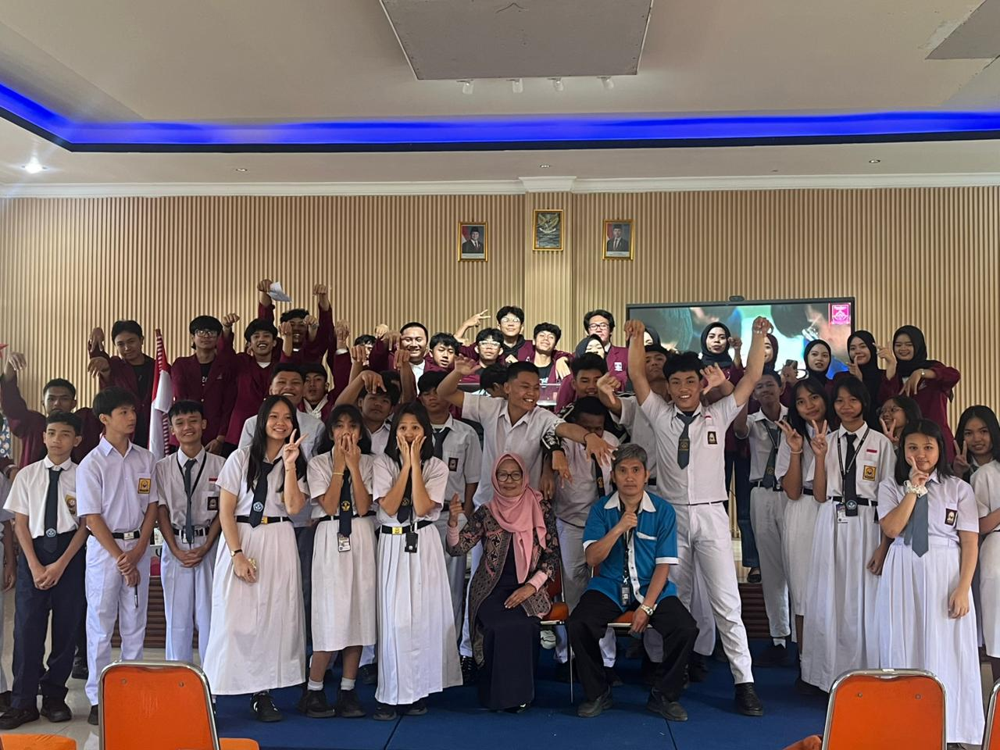
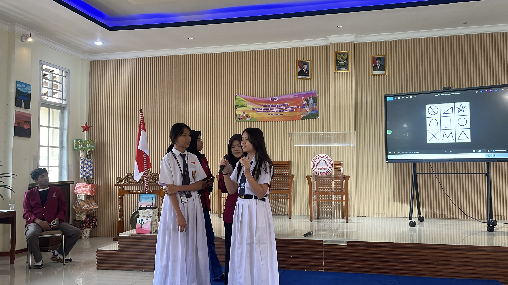
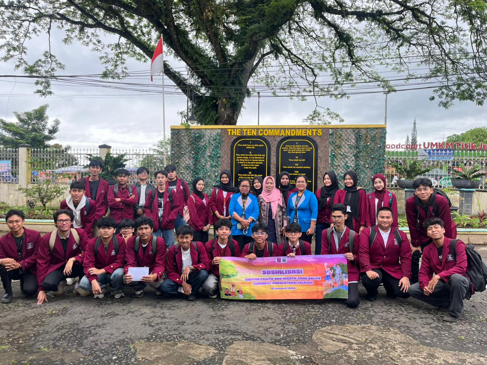
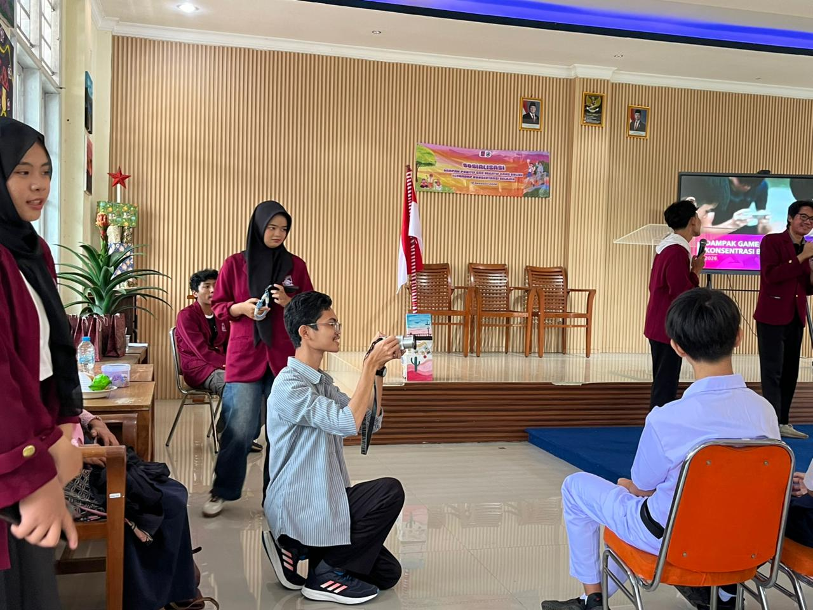

Pelajari lebih lanjut mengenai manifesto nilai luhur ini melalui tautan resmi: Trilogi Nusa Putra - Nilai-Nilai Luhur.
Latar Belakang Kegiatan
Sebagai bagian dari Civitas Akademika Universitas Nusa Putra, setiap mahasiswa dibekali dengan pemahaman mendalam mengenai nilai-nilai luhur yang terkandung dalam Trilogi Nusa Putra. Salah satu pilar penting yang senantiasa menjadi kompas moral kami dalam bermasyarakat adalah Amor Concervis, yaitu semangat cinta kasih terhadap sesama manusia. Pemilihan aktivitas sosialisasi bahaya game online ini didasari oleh keprihatinan mendalam yang saya rasakan ketika mengamati lingkungan sekitar rumah, khususnya perilaku anak-anak usia sekolah dasar. Di era digital saat ini, gadget telah bertransformasi menjadi teman bermain utama bagi mereka, menggeser permainan tradisional yang sarat akan interaksi fisik dan nilai sosial. Semakin hari, intensitas mereka dalam menatap layar gawai guna bermain game daring kian tidak terkendali, sehingga memicu berbagai perubahan perilaku yang cenderung negatif.
Saya menyaksikan sendiri bagaimana adik-adip di lingkungan tempat tinggal saya mulai menunjukkan gejala ketergantungan digital, seperti emosi yang meledak-ledak saat diminta berhenti bermain, berkurangnya kepekaan sosial terhadap lingkungan sekitar, hingga penurunan konsentrasi dalam belajar. Fenomena ini tentu tidak boleh dibiarkan begitu saja karena dapat merusak masa depan generasi penerus bangsa. Berangkat dari rasa kepedulian yang tulus dan panggilan jiwa untuk mengimplementasikan esensi dari Amor Concervis, saya memutuskan untuk menginisiasi sebuah kegiatan nyata yang edukatif. Fokus utamanya adalah merangkul anak-anak tersebut secara langsung guna membuka cakrawala berpikir mereka mengenai batasan dan bahaya tersembunyi di balik kecanduan dunia virtual.

Proses Pelaksanaan Kegiatan
Kegiatan sosialisasi ini tidak saya lakukan sendirian, melainkan dirancang dan dieksekusi secara kolektif bersama rekan-rekan mahasiswa satu kelas. Menyadari bahwa pendekatan kelompok akan memberikan dampak dan jangkauan yang lebih luas, kami membagi peran di dalam kelas dengan sangat terstruktur. Ada tim yang bertugas menyusun modul materi edukasi agar ringan dan mudah dipahami, tim yang menyiapkan visualisasi atau alat peraga kreatif, serta rekan-rekan yang bertugas sebagai fasilitator lapangan untuk mendampingi interaksi dengan anak-anak secara langsung. Kolaborasi kelas ini menjadi bukti nyata bagaimana semangat kebersamaan akademis dapat disalurkan menjadi gerakan sosial yang terorganisir.
Saat terjun ke lapangan bersama-sama, kami mendatangi area berkumpulnya anak-anak di lingkungan sekolah dengan penuh antusias. Kehadiran kami secara berkelompok sempat memicu rasa penasaran sekaligus canggung dari anak-anak tersebut, namun dinamika kelompok kami yang ceria dan persuasif berhasil mencairkan suasana dengan cepat. Secara bergantian, kami memaparkan materi dampak buruk kecanduan game online tanpa kesan menggurui. Kami membaginya ke dalam tiga sudut pandang utama: kesehatan fisik seperti kelelahan mata akibat radiasi layar, kesehatan mental terkait kecanduan dopamin buatan yang memicu sifat agresif, serta penurunan kepekaan sosial dalam hubungan keluarga dan pertemanan nyata.

Sesi kuis interaktif berhadiah kecil yang kami kelola bersama menjadi puncak acara yang paling dinamis. Melalui diskusi dua arah ini, anak-anak secara jujur merefleksikan kebiasaan harian mereka yang sering melalaikan tugas sekolah demi mengejar peringkat permainan virtual. Di akhir sesi, kami bersama-sama menuntun mereka untuk menyepakati batasan waktu bermain gadget yang sehat serta berkomitmen untuk kembali menghidupkan interaksi di dunia nyata.
Refleksi Emosi dan Pelajaran Berharga

Melalui pengalaman langsung di lapangan ini, ada banyak sekali gelombang emosi serta pelajaran hidup yang sangat berharga yang berhasil saya petik. Pada awalnya, ada rasa kekhawatiran apakah pesan yang saya bawa dapat diterima dengan baik oleh anak-anak atau justru diabaikan. Namun, ketika melihat binar mata mereka yang penuh rasa ingin tahu serta senyum tulus yang terkembang di akhir sesi, rasa lelah dan cemas tersebut seketika sirna, berganti menjadi sebuah kepuasan batin yang luar biasa mendalam. Saya menyadari bahwa kepedulian sosial tidak melulu membutuhkan pergerakan dalam skala masif atau pendanaan yang besar.

Pengalaman ini mengajarkan saya esensi sejati dari menjadi seorang 'Genusian' yang adaptif dan berdampak. Berbagi ilmu yang kita miliki, menyisihkan waktu untuk mendengar keluh kesah mereka, serta memberikan pelukan edukasi yang tulus adalah bentuk nyata dari rasa cinta kasih sesama. Kegiatan ini menyadarkan saya bahwa tantangan zaman digital tidak bisa dihadapi hanya dengan kecaman, melainkan dengan rangkulan penuh kasih dan bimbingan yang konsisten dari kita selaku generasi yang lebih dewasa.
Sebagai kesimpulan, implementasi nilai-nilai kenusaputraan ini membuktikan bahwa hal-hal kecil yang dilakukan secara tulus mampu membawa dampak positif yang nyata. Semoga semangat menyebarkan rasa kasih ini terus melekat dalam identitas kita sebagai bagian dari Civitas Akademika Universitas Nusa Putra.